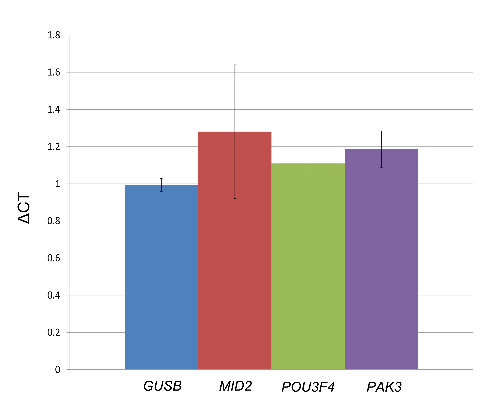

C.3 Supplemental Figure

Figure C.1: Assessment of gene expression changes for DGAP176-derived LCLs. Control gene expression is shown in blue and surveyed genes are marked in different colors. Each column represents the ΔCT results of three culture replicates, with four technical replicates each, compared to three sex-matched control cell lines. Error bars indicate the standard deviation calculated from the biological replicates per gene.